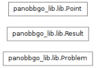

This file contains the basic objects to build a problem and to do a single evaluation.

Note
This is used by panobbgo and panobbgo_lib.
Bases: object
This contains the x vector for a new point and a reference to who has generated it.
A string, which is the name of a heuristic.
To get the actual heuristic, use the strategie's heuristic method.
The vector \(x\), a numpy.ndarray
Bases: object
this is used to store the objective function, information about the problem, etc.
box must be a list of tuples, which specify the range of each variable.
example: \(\left[ (-1,1), (-100, 0), (0, 0.01) \right]\).
The bounding box for this problem, a \((\mathit{dim},2)\)-array.
Note
This might change to a more sophisticated Box object.
This is called to evaluate the given black-box function. The problem should be called directly (__call__ special function wraps this) and the given problem should subclass this eval method.
This method is optionally overwritten by the problem to calculate the constraint violations. It has to return a numpy.ndarray of floats.
projects given point into the search box. e.g. \([-1.1, 1]\) with box \([(-1,1),(-1,1)]\) gives \([-1,1]\)
The ranges along each dimension, a numpy.ndarray.
Bases: object
This represents one result, wich is a mapping of a Point \(x \rightarrow f(x)\).
Additionally, there is also
Args:
The chosen norm of cv_vec; see cv_norm in constructor.
Note
Only the positive entries are used to calculate the norm!
Vector of constraint violations for each constraint, or None.
Note
Be aware, that entries could be negative. This is useful if you want to know how well a point is satisfied. The .cv property just looks at the positive entries, though.
The function value \(f(x)\) after evaluating it.